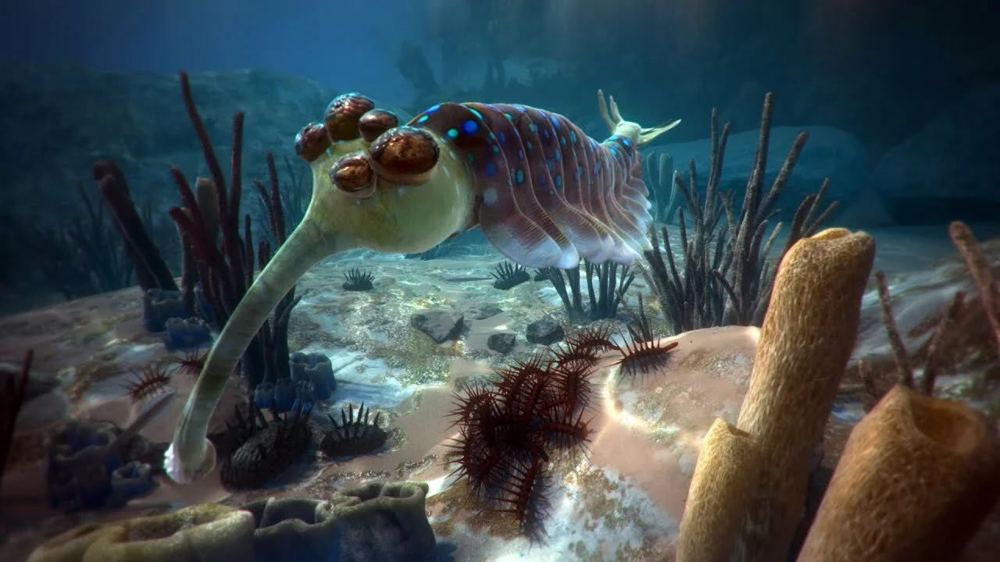
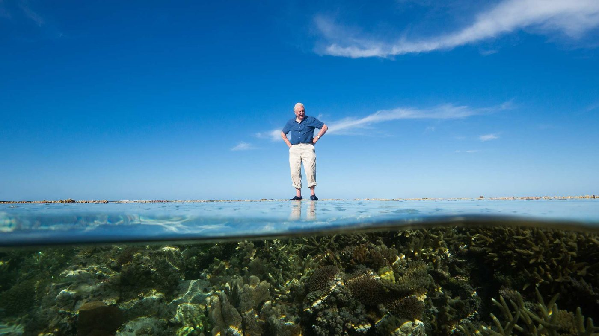
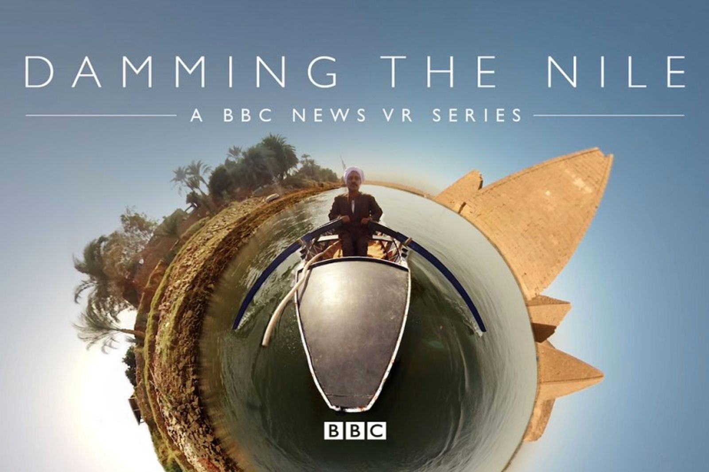
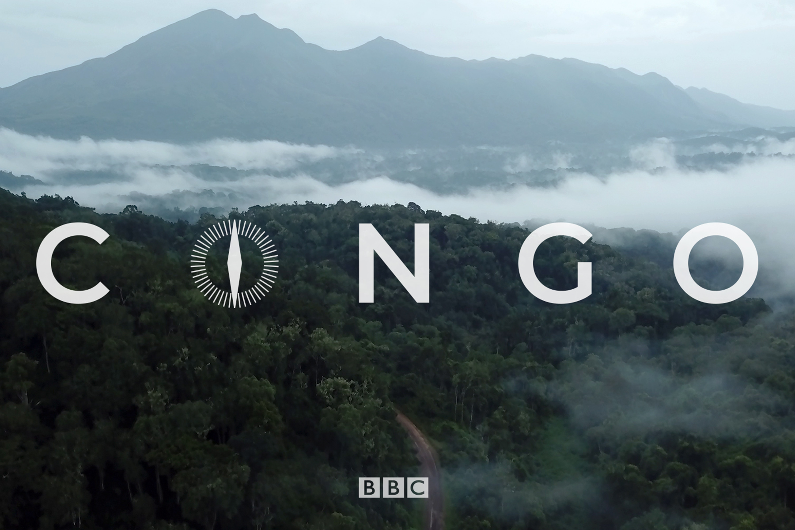
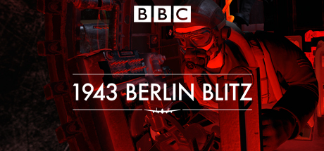
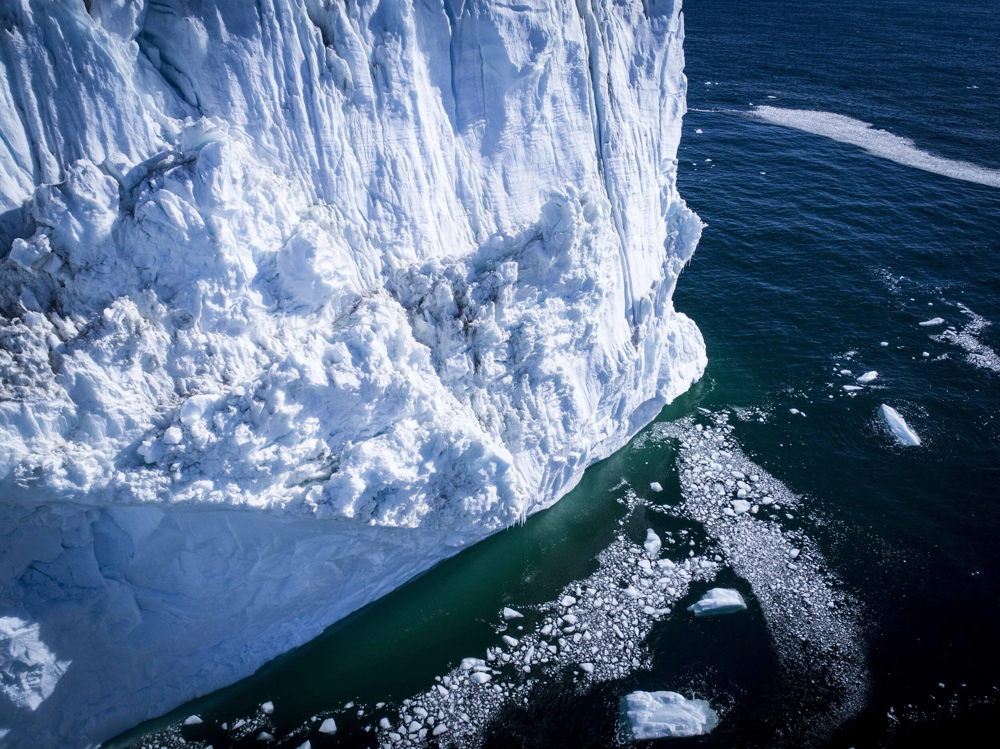
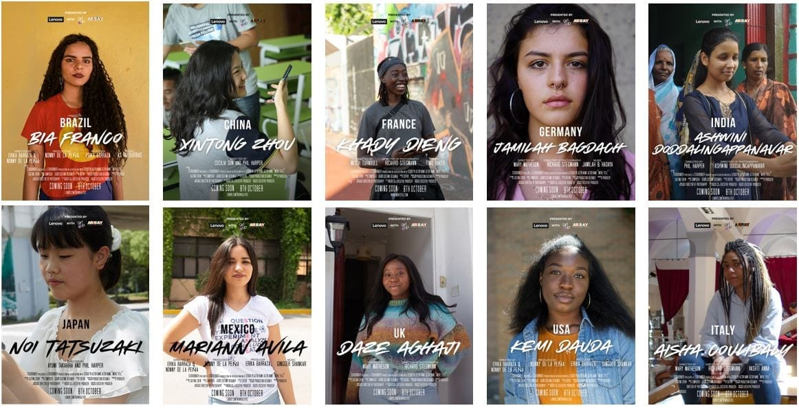

01 — Story
Film, VR & Journalism
Showreel — selected documentary and VR work

2012 — 2015 · ITN Productions
Truthloader
YouTube channel verifying citizen journalism during the Arab Spring. Grew to 600,000 subscribers in twelve months. Hosted, investigated, and edited. The "Reddit for Sale" sting — buying the top spot on Reddit for $200 — was cited in academic research on digital propaganda years before "fake news" entered the mainstream.

2015 — 2016 · Atlantic Productions
First Life VR
Writer and producer on a VR experience narrated by Sir David Attenborough, visualising the Cambrian ocean 540 million years ago. High-fidelity CGI reconstruction of Anomalocaris, Hallucigenia, and other early life — built from Natural History Museum fossil records. Exhibited at the NHM.

2016 — 2017 · Atlantic Productions
David Attenborough's Great Barrier Reef VR
Co-directed a VR film with Sir David Attenborough. 360-degree stereoscopic footage from a Triton submersible, custom underwater rigs, and a mantis shrimp UV vision simulation. Became a permanent exhibit at the Natural History Museum. Won a BAFTA for Digital Creativity.

2017 — 2018 · BBC VR Hub
Damming the Nile
Directed and produced a VR documentary on the Grand Ethiopian Renaissance Dam for the BBC. Filmed across Sudan, Egypt, and Ethiopia. Pioneered "embodied presence" in VR journalism — in one scene, the correspondent pours the viewer a glass of water, the very resource being fought over. Won the Rose d'Or.

2018 — 2019 · BBC VR Hub
Congo VR
Directed and produced a three-part VR series across the Democratic Republic of Congo — "Great Riches", "War and Disease", "A Troubled Past". Filmed in Kinshasa, the rainforest, and on the river. Used 360-degree format to convey the immensity of the Congo River and the density of the rainforest. Cross-platform release: VR, TV documentary, and long-form audio.

2018 — 2019 · BBC VR Hub
1943 Berlin Blitz
Directed a 6DoF CGI experience placing viewers inside a Lancaster bomber during a night raid over Berlin, synchronised to an authentic 1943 BBC audio recording by correspondent Wynford Vaughan-Thomas. Audiences instinctively ducked at flak. Won Best VR at the Broadcast Digital Awards.

2018 — 2019 · White Spark Pictures
The Antarctica Experience
Co-directed, wrote, and shot a VR documentary at Australia's Davis Station. Narrated by David Wenham. Drone cinematography of glaciers, ground-level penguin colony shots, helicopter flybys. Grossed over $1 million at museum box offices across Australia — one of the top 10 highest-grossing Australian documentaries.

2018 — 2019 · Lenovo
New Realities
Produced VR films for Lenovo across three countries, bringing immersive storytelling to a commercial audience at global scale. Commercial work demonstrating that the techniques developed in documentary VR could translate to brand storytelling.
2024 — Now
The Digger
Investigative Substack using data, code, and forensic analysis to examine things the mainstream doesn't question. The aluminium adjuvant investigation used the FDA's own models against them. The White House plagiarism analysis traced a think-tank report repackaged as presidential policy. 16,000+ subscribers.